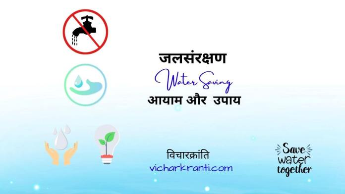
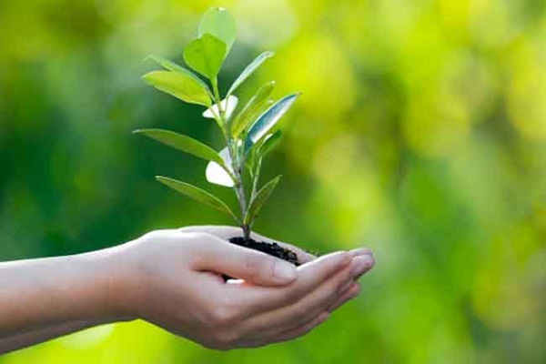
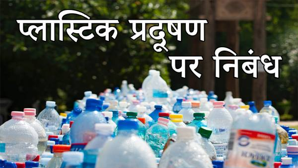

जल संरक्षण

जल संरक्षण जल को प्रदूषित होने से बचाना और उसके विवेकपूर्ण उपयोग
जिसमें जल के उपयोग को यथासंभव कम करना तथा उद्योग,निर्माण और कृषि जैसे क्षेत्र जहां
पुनः चक्रित जल का उपयोग संभव हो, उसके उपयोग को प्राथमिकता और बढ़ावा देने को
ही हम जल संरक्षण कहेंगे ।
पूरे ब्रह्मांड में पृथ्वी (Earth) ही एक ऐसा ग्रह है जहां पर जल पाया जाता है हालांकि चांद पर भी जल के होने की बात कही जाती है लेकिन फिलहाल वहां पर अभी मानव जाति का अस्तित्व नहीं है।
क्या आप जानते हैं मानव शरीर में लगभग 60% जल होता है और मनुष्य के मस्तिष्क में 85% जल होता है तथा मनुष्य के रक्त में 79% जल की मात्रा होती है और वहीं फेफड़ों में लगभग 80% जल होता है।
इस बात से आप समझ ही गए होंगे कि आखिर जल हमारे लिए कितना महत्वपूर्ण है अगर हम नियमित रूप से जल का सेवन ना करें तो हमारा शरीर कई बीमारियों से ग्रसित हो सकता है।
नियमित रूप से जल का सेवन हमारे शरीर को कई घातक बीमारियों से बचाता है जल हमारे लिए इतना महत्वपूर्ण होने के बावजूद भी हम इसे बचाने की जगह इसे व्यर्थ ही कर रहे हैं।
पर्यावरण संरक्षण

पर्यावरण को संरक्षित करने के लिए भारत ने भी महत्वपूर्ण कदम उठाया और
1986, में पर्यावरण संरक्षण अधिनियम पारित कर दिया। इस अधिनियम का मुख्य उद्देश्य वातावरण में घुले घातक रसायनों की अधिकता को
म करना और पारिस्थितिकीय तंत्र को प्रदूषण से बचाना है।
इस अधिनियम का निर्माण पर्यावरण के संरक्षण और सुरक्षा के लिए बनाया गया है।
'परि' का आशय चारों ओर तथा 'आवरण' का आशय परिवेश है। दूसरे शब्दों में कहें तो पर्यावरण अर्थात वनस्पतियों, प्राणियों, और मानव जाति सहित सभी सजीवों और उनके साथ संबंधित भौतिक परिसर को पर्यावरण कहतें हैं वास्तव में पर्यावरण में वायु, जल, भूमि, पेड़-पौधे, जीव-जन्तु ,
मानव और उसकी विविध गतिविधियों के परिणाम आदि सभी का समावेश होता है।

प्लास्टिक प्रदूषण
प्लास्टिक से बनी वस्तुओं का जमीन या जल में इकट्ठा होना प्लास्टिक प्रदूषण (Plastic pollution)
कहलाता है जिससे वन्य जन्तुओं, या मानवों के जीवन पर बुरा प्रभाव पडता है।प्लास्टिक प्रदूषण पर प्रतिकूल वन्य जीवन,
वन्यजीव निवास स्थान को प्रभावित करता है कि वातावरण में प्लास्टिक उत्पादों के संचय करना शामिल है। कई प्रकार के और
प्लास्टिक प्रदूषण के रूपों में मौजूद हैं। प्लास्टिक प्रदूषण पर प्रतिकूल भूमि, जलमार्ग और महासागरों को प्रभावित कर सकते हैं।
प्लास्टिक में कमी के प्रयासों प्लास्टिक की खपत को कम करने और प्लास्टिक रीसाइक्लिंग को बढ़ावा देने के प्रयास में कुछ क्षेत्रों में
हुई है। प्लास्टिक प्रदूषण की प्रमुखता प्लास्टिक मनुष्यों द्वारा इस्तेमाल
प्लास्टिक के उच्च स्तर को उधार देता है, जो सस्ती और टिकाऊ होने के साथ जोड़ा जाता है।